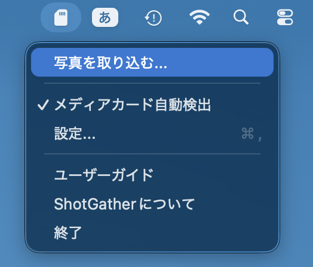
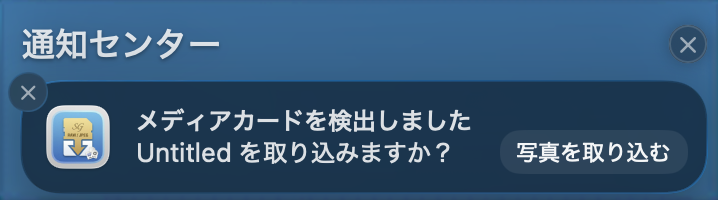
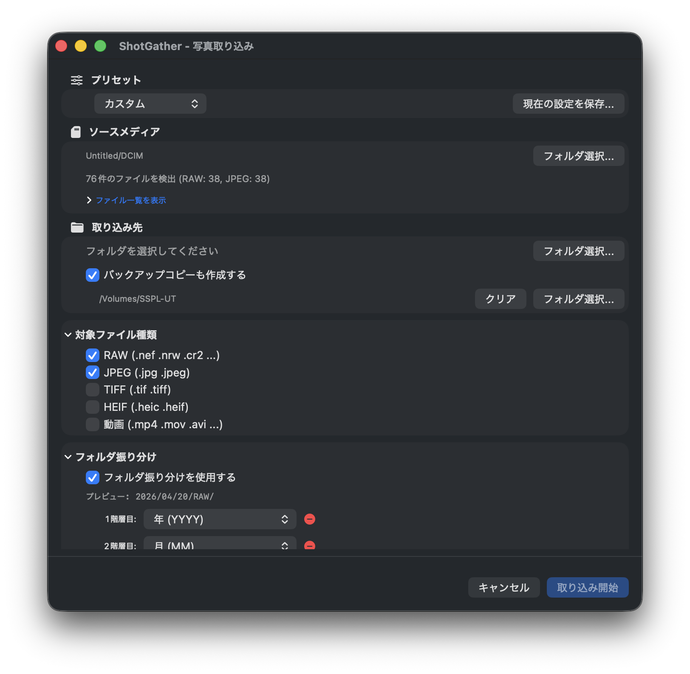
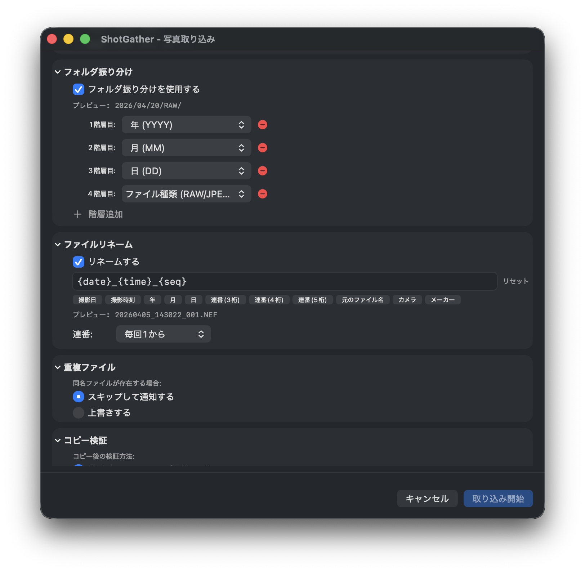
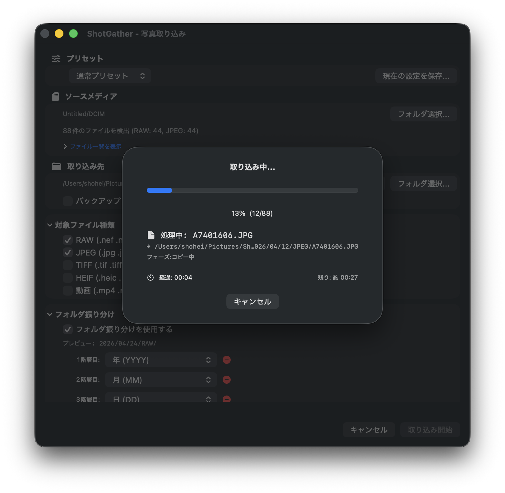
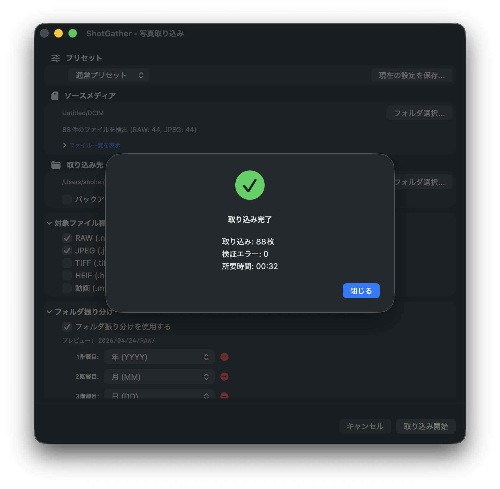
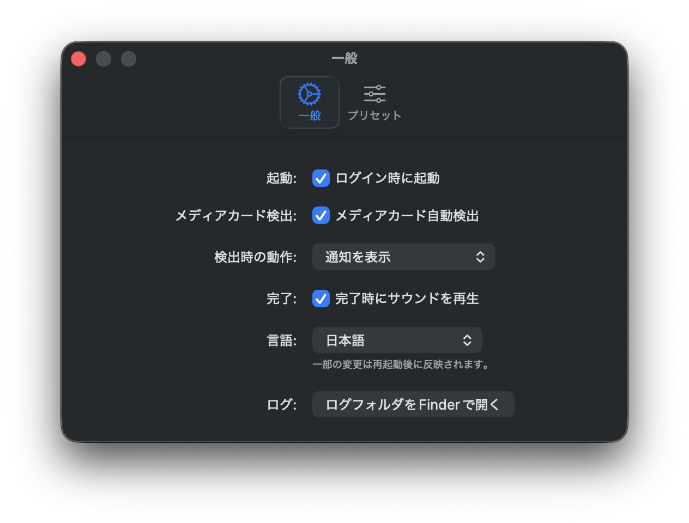
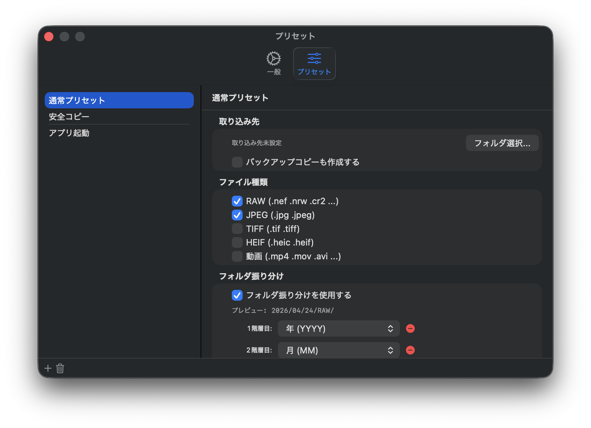

1. ShotGather とは
ShotGather は、カメラで撮影した写真・動画をメディアカードから Mac へ取り込むための無料の macOS メニューバーアプリです。SD カード・CFexpress・XQD カードや USB 接続のカメラに対応し、取り込みはコピーのみで行います。カード上の元ファイルを削除したり書き換えたりすることは一切ありません。
取り込み時には、EXIF の撮影日時をもとにした年／月／日フォルダへの自動振り分け、ファイル名の一括リネーム、SHA-256 チェックサムによるコピー検証、別ドライブへのバックアップ同時コピーまでを一度に行えます。DxO PhotoLab、Capture One、Photoshop Elements 2026 などの RAW 現像ソフトと組み合わせて使うことを想定しています。
これまで Automator のフォルダアクションやイメージキャプチャ（Image Capture）で写真の自動取り込みワークフローを自作してきた方は、ShotGather にそのまま置き換えられます。ワークフローを組んだり保守したりする必要はなく、すべてアプリの設定画面だけで完結します。
主な機能
- メディアカード自動検出 — SD・CFexpress・XQD カードや USB カメラの接続を検出し、通知します。
- 日付自動振り分け — EXIF の撮影日時を読み取り、年/月/日などのフォルダ構造を自動生成します。
- ファイル名リネーム — 日付・時刻・連番・カメラ名などのトークンを組み合わせて自由に設定できます。
- ファイル種類フィルタ — RAW・JPEG・TIFF・HEIF・動画から、取り込みたい種類だけを選べます。
- バックアップ同時コピー — 取り込みと同時に、別ドライブへのミラーコピーも行えます。
- コピー検証 — ファイルサイズ比較または SHA-256 チェックサムで、コピーの正確性を確認します。
動作環境
| 項目 | 要件 |
|---|---|
| OS | macOS 15 Sequoia 以降 |
| アーキテクチャ | Apple Silicon (M シリーズ) / Intel（ユニバーサル対応） |
| 対応メディア | SD カード、CFexpress カード、XQD カード、USB 接続カメラ（DCIM フォルダを持つデバイス） |
2. はじめに
アプリの起動
ShotGather を起動しても、Dock にアイコンは表示されません。かわりに、画面右上のメニューバーに SD カードのアイコンが常駐します。このアイコンをクリックするとメニューが開き、取り込み操作や設定にアクセスできます。

メニュー項目
- 写真を取り込む… — 取り込みダイアログを手動で開きます
- メディアカード自動検出 — ON/OFF を切り替えます（チェックマーク付きが ON）
- 設定… — 環境設定ウィンドウを開きます
- ユーザーガイド — このガイド（shotgather.com）をブラウザで開きます
- ShotGather について — バージョン情報を表示します
- 終了 — アプリを終了します
最初に設定しておくこと
初めて使う前に、次の 2 つを設定しておくとスムーズです。
- 取り込み先フォルダを指定する — 設定の「プリセット」タブで、既定プリセットの取り込み先フォルダを設定します。設定しないと、取り込みのたびに毎回フォルダを選ぶ必要があります。
- ログイン時に自動起動する — 設定の「一般」タブで「ログイン時に起動」を ON にすると、Mac を再起動しても自動的にメニューバーに常駐します。
3. 取り込みの基本フロー
メディアカードを挿してから取り込み完了まで、典型的な手順は次のとおりです。
- メディアカードを挿入する。 SD カードスロットやカードリーダー、または USB ケーブルでカメラを Mac に接続します。DCIM フォルダを持つデバイスが自動検出の対象です。
- 通知またはメニューから取り込みを開始する。 自動検出が ON の場合、「メディアカードを検出しました」という通知が届きます。通知をクリックするか、メニューバーアイコンから「写真を取り込む…」を選びます。
- 取り込み設定を確認する。 プリセットを選ぶか、取り込み元・取り込み先・ファイル種類・リネームルールなどを必要に応じて調整します。ファイルリストで取り込まれるファイルを事前確認できます。
- 「取り込み開始」をクリックする。 準備ができたら「取り込み開始（⌘Return）」ボタンをクリックすると、コピーが始まります。
- 進捗を確認する。 進捗画面でコピー状況をリアルタイムに確認できます。途中でやめたい場合は「キャンセル」ボタンを押してください。
- 完了画面で結果を確認する。 取り込み件数のサマリが表示されます。「取り込み先を開く」ボタンで Finder に直接ジャンプできます。


4. 取り込みダイアログの詳細
取り込みダイアログには複数のセクションがあり、各セクションは折りたたんで表示を整理できます。

プリセット
よく使う設定の組み合わせを「プリセット」として保存しておくことができます。撮影シーンやカメラ機種ごとにプリセットを用意しておくと、毎回の設定変更が不要になります。プリセットは設定ウィンドウの「プリセット」タブで管理します。
取り込み元 / 取り込み先
- 取り込み元 — 読み込むメディアカード（ボリューム）を選択します。自動検出時は自動で選ばれます。
- 取り込み先 — 写真の保存先フォルダを指定します。「参照…」ボタンで Finder から選択できます。
バックアップ同時コピー
取り込みと同時に、別のドライブやフォルダにもまったく同じ構成でコピーします。外付けドライブや NAS をバックアップ先に指定しておくことで、取り込みと同時に二重化が完了します。
ファイル種類
取り込むファイルの種類をチェックボックスで選択します。初期状態では RAW と JPEG が選択されています。
- RAW — CR3、NEF、ARW、RAF、ORF など（対応形式の一覧は FAQ を参照）
- JPEG
- TIFF
- HEIF（HEIC を含む）
- 動画 — MP4、MOV、AVI、MTS、M2TS
フォルダ自動振り分け
EXIF の撮影日時に基づいて、取り込み先に自動でサブフォルダを作成します。フォルダ階層は最大 5 段まで設定でき、＋／－ボタンで階層の追加・削除が可能です。各階層で以下のプルダウンからトークンを選択し、階層ごとにパターンを組み合わせます。リアルタイムプレビューで生成されるパスを確認しながら設定できます。
| 選択肢 | 内容 | 出力例 |
|---|---|---|
| 年 (YYYY) | 撮影年（4桁） | 2026 |
| 年 下2桁 (YY) | 撮影年（2桁） | 26 |
| 月 (MM) | 撮影月（2桁・ゼロ埋め） | 04 |
| 日 (DD) | 撮影日（2桁・ゼロ埋め） | 24 |
| 年月 (YYYYMM) | 年月の組み合わせ（区切りなし） | 202604 |
| 年-月 (YYYY-MM) | 年月の組み合わせ（ハイフン区切り） | 2026-04 |
| 年_月 (YYYY_MM) | 年月の組み合わせ（アンダースコア区切り） | 2026_04 |
| 年月日 (YYYYMMDD) | 撮影日（年月日、区切りなし） | 20260424 |
| 年-月-日 (YYYY-MM-DD) | 撮影日（年月日、ハイフン区切り） | 2026-04-24 |
| 年_月_日 (YYYY_MM_DD) | 撮影日（年月日、アンダースコア区切り） | 2026_04_24 |
| カメラ名 | カメラモデル名 | EOS R5 |
| ボディシリアル番号 | カメラのボディシリアル番号 | 123456789 |
| カスタム文字列 | 任意の文字列（テキストフィールドで入力） | 旅行 |
| ファイル種類 (RAW/JPEG) | ファイル種類ごとのサブフォルダを作成 | RAW |
例: 1段目に「年-月-日 (YYYY-MM-DD)」を選択すると、2026-04-24/ というフォルダが作られます。
「ファイル種類 (RAW/JPEG)」をいずれかの階層に追加すると、RAW・JPEG・動画などを種類別のサブフォルダに振り分けることができます。
ファイル名リネーム
取り込み時にファイル名を変更できます。ダイアログ上のボタンをクリックしてトークンを挿入するか、テキストフィールドに直接入力して自由にパターンを組み合わせられます。リアルタイムプレビューで変換後のファイル名を確認しながら設定できます。
| ボタン | 内容 | 例 |
|---|---|---|
{date} | 撮影日（yyyyMMdd形式） | 20260424 |
{time} | 撮影時刻（HHmmss形式） | 143052 |
{year} | 撮影年 | 2026 |
{month} | 撮影月 | 04 |
{day} | 撮影日 | 24 |
{seq} | 連番（3桁） | 001 |
{seq4} | 連番（4桁） | 0001 |
{seq5} | 連番（5桁） | 00001 |
{original} | 元のファイル名（拡張子なし） | IMG_1234 |
{camera} | カメラモデル名 | EOS_R5 |
{camera_make} | カメラメーカー名 | Canon |
例: {date}_{time}_{seq} → 20260424_143052_001.CR3
{date_hyphen}（yyyy-MM-dd 形式）、{time_hyphen}（HH-mm-ss 形式）、{hour}、{minute}、{second} なども利用できます。拡張子はパターンに関係なく常に元の拡張子が自動付加されます。
連番の動作は以下の 3 種類から選べます。
- 毎回1から — 取り込みのたびに 001 からリセット
- 前回の続きから — 前回の続きから連番
- 開始番号を指定 — 任意の数値から開始
重複ファイルの扱い
- スキップ — 同名ファイルがすでに存在する場合はコピーしません（既存ファイルを保護）
- 上書き — 同名ファイルを上書きします
コピー検証
コピーしたファイルが正しく書き込まれたかを確認します。
- 高速（ファイルサイズ比較） — 速度重視。ファイルサイズが一致するかを確認します。
- 安全（SHA-256 チェックサム） — 精度重視。ビット単位で一致を検証します。大量ファイルでは時間がかかります。
検証でエラーが発生した場合、自動的に再試行します。再試行後も失敗した場合は、完了画面に「検証エラー」として件数が表示されます。
取り込み完了後の動作
- Finder で取り込み先を開く
- 指定したアプリで開く（RAW 現像ソフトなどを指定）
- 何もしない
5. 進捗と完了
進捗画面
取り込み開始後、進捗画面が表示されます。
- 現在処理中のファイル名と変換後のパス
- 処理フェーズ（コピー中 / 検証中 / バックアップ中）
- 進捗バーと経過時間 / 残り時間
- 「キャンセル」ボタン（クリックで取り込みを中断できます）

完了画面
すべての処理が終わると、完了画面が表示されます。
- 取り込み件数（コピー成功 / スキップ / 上書き / 検証エラー / バックアップ）
- 総処理時間
- 「取り込み先を開く」ボタン — Finder で保存先フォルダを開きます
- 「詳細を表示」ボタン — ファイルごとの詳細ログを確認できます

6. 設定（環境設定）
メニューバーアイコンから「設定…」を選ぶか、⌘, キーで設定ウィンドウを開きます。設定は「一般」「プリセット」の 2 つのタブで構成されています。
一般タブ
| 項目 | 説明 |
|---|---|
| ログイン時に起動 | Mac 起動時に ShotGather を自動的にメニューバーに常駐させます |
| メディアカード自動検出 | ON にすると、対応メディアの挿入を検出します |
| 検出時の動作 | 「通知を表示」または「直接ダイアログを表示」を選べます（自動検出が OFF の場合は無効） |
| 完了時にサウンドを再生 | 取り込み完了時に通知音を鳴らします |
| 言語 | システム設定に従う・日本語・English を切り替えます（変更後は再起動で反映） |
| ログフォルダを開く | ログファイルの保存フォルダを Finder で開きます |

プリセットタブ
取り込み先・ファイル種類・フォルダ振り分け・リネーム・重複ファイル処理・コピー検証・完了後のアクション・バックアップコピー設定など、取り込みに関するすべての設定をプリセット単位で管理します。よく使う設定の組み合わせをプリセットとして保存しておくことで、撮影シーンやカメラ機種ごとに素早く切り替えられます。
- ＋ボタン — 現在の取り込み設定をプリセットとして保存します
- プリセット名をダブルクリック — プリセット名を変更します
- －ボタン — 選択中のプリセットを削除します

7. よくある質問
元のファイルは削除されますか？
いいえ、削除されません。ShotGather はコピーのみを行います。一部のデジタルカメラはメディアカード上の専用データベースファイルを管理しており、元ファイルを削除するとカメラ側の動作に支障が出る場合があります。ShotGather はメディアカードに一切書き込まず、読み取り専用で動作します。
「取り込み先へのアクセス権がありません」というメッセージが出ます
ShotGather は macOS のサンドボックス環境で動作するため、フォルダへのアクセス権限を Security-Scoped Bookmark として保持しています。フォルダを移動・削除した場合、または長期間アクセスしていなかった場合に権限が無効になることがあります。取り込みダイアログの「参照…」ボタンで再度フォルダを選択し直してください。
メディアカードを挿してもダイアログが開かない
以下を確認してください。
- 設定の「一般」タブで「メディアカード自動検出」が ON になっているか
- メディアカードに DCIM フォルダ が存在するか（デジタルカメラで撮影したカードであれば通常存在します）
- ShotGather が実行中か（メニューバーに SD カードアイコンが表示されているか）
手動で開くには、メニューバーアイコンから「写真を取り込む…」を選択してください。
検証エラーが表示されました
コピーしたファイルのサイズまたはチェックサムが元ファイルと一致しなかった場合、ShotGather は自動的に再試行します。再試行後も一致しない場合は「検証エラー」として完了画面に表示されます。メディアカードや保存先ドライブに問題がある可能性があります。別のカードリーダーを使う、ドライブの空き容量を確認するなどをお試しください。
対応している RAW フォーマットを教えてください
対応している RAW 形式は次のとおりです。
- Canon — CR3、CR2
- Nikon — NEF、NRW
- Sony — ARW
- FUJIFILM — RAF
- OM SYSTEM / Olympus — ORF
- Panasonic — RW2
- PENTAX — PEF
- Phase One — IIQ
- Hasselblad — 3FR
- Samsung — SRW
- DNG（Leica など DNG 形式を採用するカメラ全般）
Automator や「イメージキャプチャ」の代わりに使えますか？
はい。これまで Automator のフォルダアクションや、イメージキャプチャ（Image Capture）の「読み込み時に開く項目」で写真の自動取り込みを行っていた方は、ShotGather にそのまま置き換えられます。EXIF 撮影日時による年／月／日フォルダへの自動振り分け、ファイル名リネーム、SHA-256 による検証、バックアップへの同時コピーをすべてアプリの設定画面から構成できるため、ワークフローを自作・保守する必要がありません。コピーのみで元ファイルには一切書き込みません。